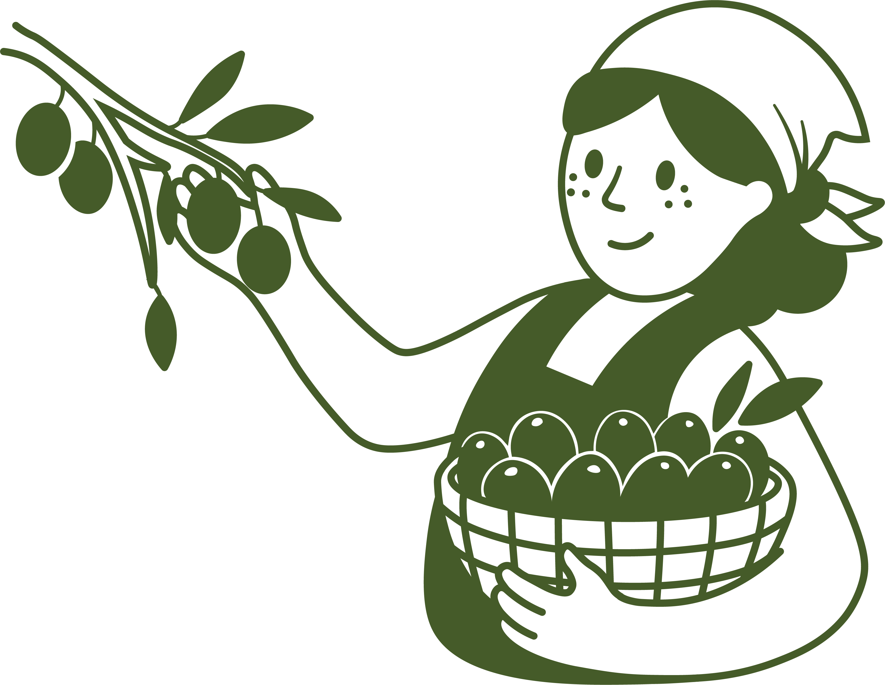
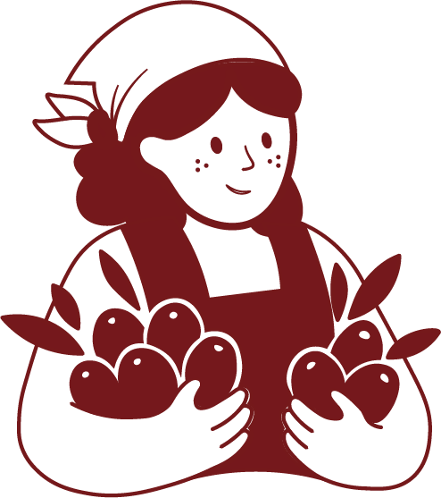
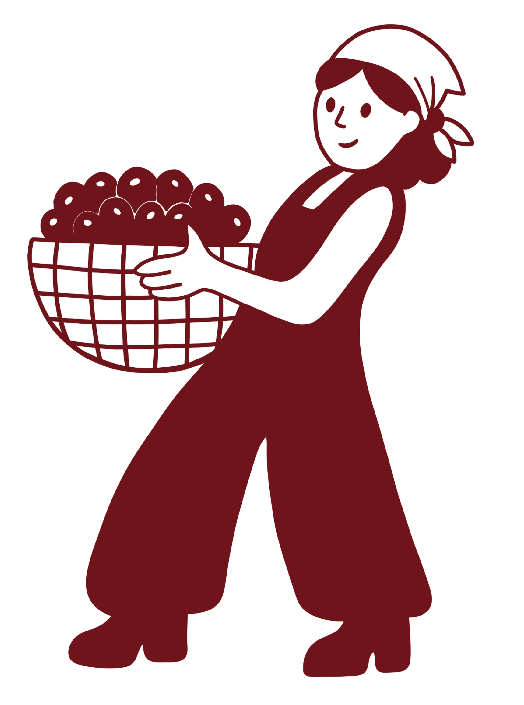
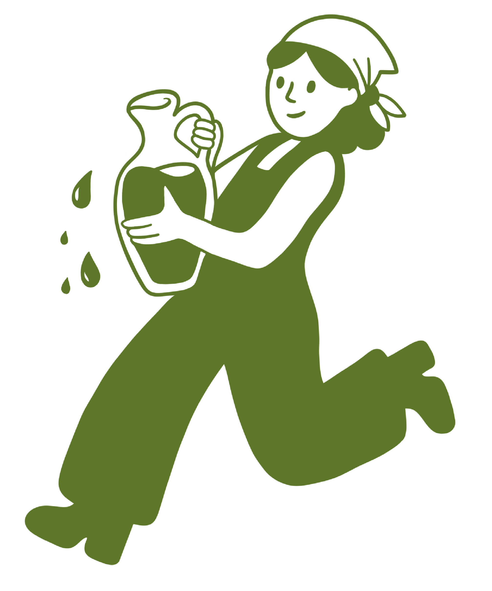

Çilli, şehir hayatının karmaşasından uzaklaşıp köklerine dönen genç bir kadın girişimcinin hikâyesiyle doğdu. Ege’nin sakinliğinde, zeytin ağaçlarının arasında yeniden yavaşlamayı ve üretmenin en doğal halini keşfetti. Markanın simgesi olan bandanalı kadın figürü; emeği, sadeliği ve toprağa bağlılığı temsil ediyor. İsmini ise Ege’de yetişen, küçük benekli görünümüyle bilinen çilli zeytinlerden aldı. Çilli, doğayla bağ kuran, samimi ve iyi hissettiren bir yaşamın küçük bir yansıması olmayı amaçlıyor.
Çilli Zeytin'in Yolculuğu



